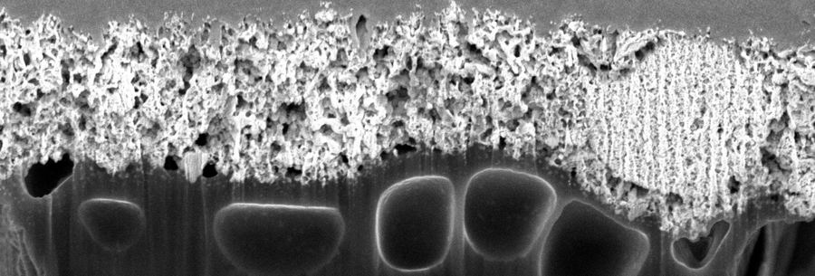
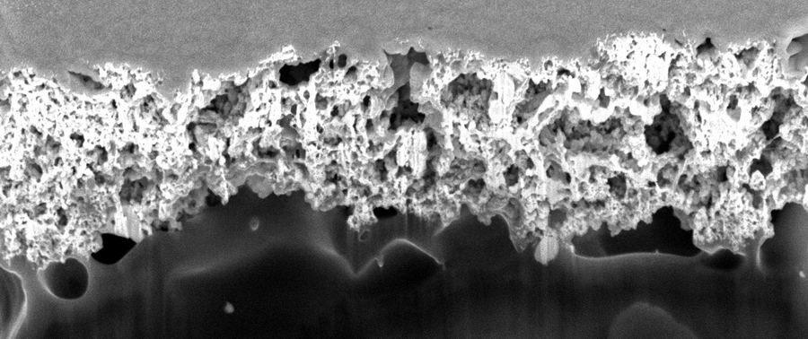
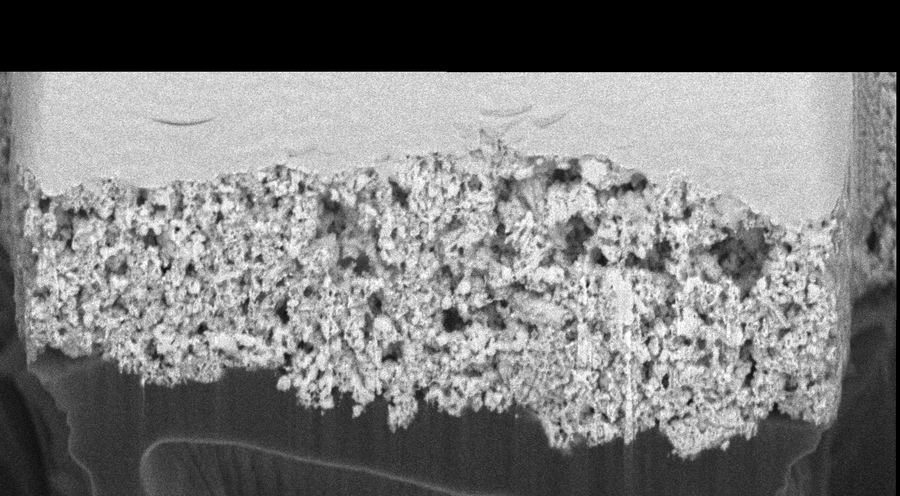

How a 3D pore network is measured with a plasma focused-ion-beam scanning electron microscope, and why it is hard. An ion beam shaves the sample one slice at a time; an electron beam images every fresh face. Through each pore the electrons reach material behind the face (shine-through), so pores do not look black. This is exactly what our digital twin simulates and what MillNet is built to undo. The camera is fixed for each step, placed where that step is easiest to see; the caption says where you are looking from.
All three come from the same kind of catalyst layer (Ferner et al. 2024). The difference is how far along this timeline it got before it was milled and imaged.
● true porosity of the cut face ● what thresholding the detector image measures. The gap is shine-through: pores that show material behind them look grey and get counted as solid.

| sample | under a PTL fibre |
| shine-through slide | 1.20 px/slice |
| contrast (cut / background) | 212 / 185 |
| porosity | 0.401 |

| sample | under a PTL gap |
| shine-through slide | 1.15 px/slice |
| contrast (cut / background) | 212 / 185 |
| porosity | 0.512 |

| sample | never assembled |
| shine-through slide | ≈ 0 px/slice |
| contrast (cut / background) | 180 / 160 |
| porosity | 0.500 |
Compression under a fibre squeezes the layer and closes pores (0.40 vs ~0.50). Pristine was imaged with different microscope settings: lower contrast, and material behind pores does not slide between slices. A model has to cope with both the different structure and the different imaging; the animation above switches between them.
A pore pixel shows whatever the electrons hit behind the face. If that material is close, the pixel is almost as bright as solid. A grey-level threshold then calls the pore solid, and porosity comes out too low (−0.10 on our digital twin).
A real cut face stays put from slice to slice. Material seen through a pore gets brighter as milling approaches it and, on comp and uncomp, slides about 1 px per slice. Neighbouring slices tell the two apart.
It reads 7 slices at once, learns the slide rate of each acquisition (about 1.2 px/slice on comp, 0 on pristine) and re-aligns the neighbours before comparing them. It then labels pore, solid and the layer boundary, and the slices are stacked into the 3D pore network.